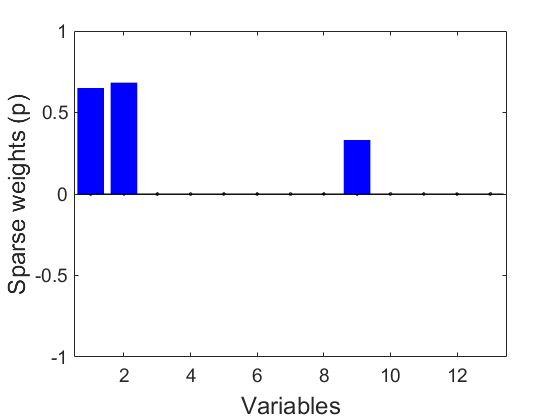
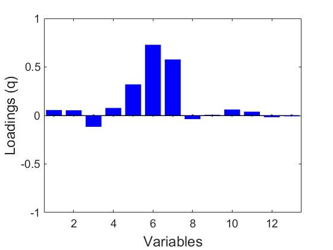
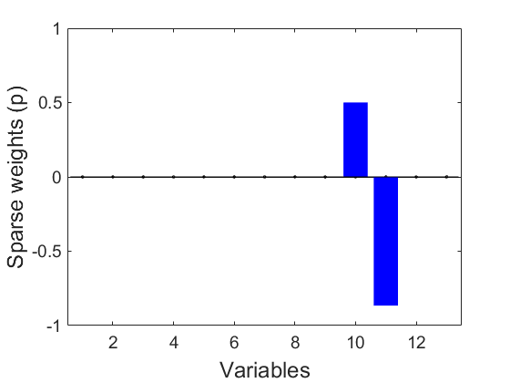
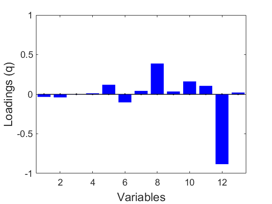
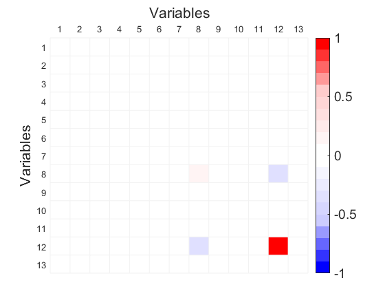
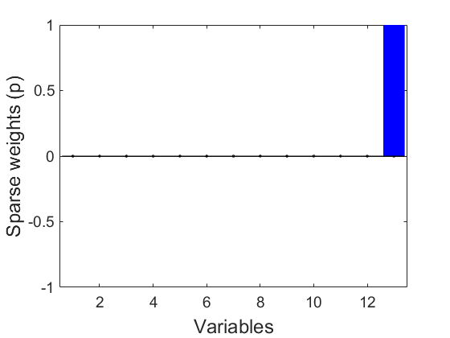

Pitprops from R package elsticnet "All Sparse PCA Models Are Wrong, But Some Are Useful. Part III: model interpretation"
Submitted to Chemometrics and Intelligent Laboratory Systems. 2025
Dependencies: MEDA Toolbox v1.8 at https://github.com/codaslab/MEDA-Toolbox
coded by: Jose Camacho Paez (josecamacho@ugr.es) last modification: 23/Jun/2025
Copyright (C) 2025 University of Granada, Granada
This program is free software: you can redistribute it and/or modify it under the terms of the GNU General Public License as published by the Free Software Foundation, either version 3 of the License, or (at your option) any later version.
This program is distributed in the hope that it will be useful, but WITHOUT ANY WARRANTY; without even the implied warranty of MERCHANTABILITY or FITNESS FOR A PARTICULAR PURPOSE. See the GNU General Public License for more details.
You should have received a copy of the GNU General Public License along with this program. If not, see http://www.gnu.org/licenses/.
Contents
Pitprops data from R package elsticnet
var_l = {'topdiam' 'length' 'moist' 'testsg' 'ovensg' 'ringtop' 'ringbut' 'bowmax' 'bowdist' 'whorls' 'clear' 'knots' 'diaknot'};
XX=[ 1.000 0.954 0.364 0.342 -0.129 0.313 0.496 0.424 0.592 0.545 0.084 -0.019 0.134
0.954 1.000 0.297 0.284 -0.118 0.291 0.503 0.419 0.648 0.569 0.076 -0.036 0.144
0.364 0.297 1.000 0.882 -0.148 0.153 -0.029 -0.054 0.125 -0.081 0.162 0.220 0.126
0.342 0.284 0.882 1.000 0.220 0.381 0.174 -0.059 0.137 -0.014 0.097 0.169 0.015
-0.129 -0.118 -0.148 0.220 1.000 0.364 0.296 0.004 -0.039 0.037 -0.091 -0.145 -0.208
0.313 0.291 0.153 0.381 0.364 1.000 0.813 0.090 0.211 0.274 -0.036 0.024 -0.329
0.496 0.503 -0.029 0.174 0.296 0.813 1.000 0.372 0.465 0.679 -0.113 -0.232 -0.424
0.424 0.419 -0.054 -0.059 0.004 0.090 0.372 1.000 0.482 0.557 0.061 -0.357 -0.202
0.592 0.648 0.125 0.137 -0.039 0.211 0.465 0.482 1.000 0.526 0.085 -0.127 -0.076
0.545 0.569 -0.081 -0.014 0.037 0.274 0.679 0.557 0.526 1.000 -0.319 -0.368 -0.291
0.084 0.076 0.162 0.097 -0.091 -0.036 -0.113 0.061 0.085 -0.319 1.000 0.029 0.007
-0.019 -0.036 0.220 0.169 -0.145 0.024 -0.232 -0.357 -0.127 -0.368 0.029 1.000 0.184
0.134 0.144 0.126 0.015 -0.208 -0.329 -0.424 -0.202 -0.076 -0.291 0.007 0.184 1.000];
clc
pcs = 1:6;
PEV vs sparsity: SPCA-Z multi-component, truncated search
[PEVpq, fp] = razorPlot([], XX, max(pcs), 'Threshold', 0.05);
Model with 1 non-zero elements y PEV = 0.26 (30% of the Reference). Time elapsed 0.008061 Model with 1 1 non-zero elements y PEV = 0.4 (46% of the Reference). Time elapsed 0.015613 Model with 1 1 1 non-zero elements y PEV = 0.51 (59% of the Reference). Time elapsed 0.0175518 Model with 1 1 1 1 non-zero elements y PEV = 0.6 (69% of the Reference). Time elapsed 0.018019 Model with 1 1 1 1 1 non-zero elements y PEV = 0.69 (79% of the Reference). Time elapsed 0.0184377 Model with 1 1 1 1 1 1 non-zero elements y PEV = 0.79 (91% of the Reference). Time elapsed 0.0188688 Model with 2 non-zero elements y PEV = 0.27 (31% of the Reference). Time elapsed 0.102295 Model with 2 1 non-zero elements y PEV = 0.41 (47% of the Reference). Time elapsed 0.103058 Model with 2 1 1 non-zero elements y PEV = 0.52 (60% of the Reference). Time elapsed 0.103607 Model with 2 1 1 1 non-zero elements y PEV = 0.6 (69% of the Reference). Time elapsed 0.104191 Model with 2 1 1 1 1 non-zero elements y PEV = 0.69 (80% of the Reference). Time elapsed 0.104808 Model with 2 1 1 1 1 1 non-zero elements y PEV = 0.8 (91% of the Reference). Time elapsed 0.105466 Model with 2 2 non-zero elements y PEV = 0.41 (47% of the Reference). Time elapsed 0.11354 Model with 2 2 1 non-zero elements y PEV = 0.52 (60% of the Reference). Time elapsed 0.11449 Model with 2 2 1 1 non-zero elements y PEV = 0.61 (70% of the Reference). Time elapsed 0.115495 Model with 2 2 1 1 1 non-zero elements y PEV = 0.7 (80% of the Reference). Time elapsed 0.116393 Model with 2 2 1 1 1 1 non-zero elements y PEV = 0.8 (92% of the Reference). Time elapsed 0.117221 Model with 2 2 2 non-zero elements y PEV = 0.58 (66% of the Reference). Time elapsed 0.118959 Model with 2 2 2 1 non-zero elements y PEV = 0.66 (76% of the Reference). Time elapsed 0.119863 Model with 2 2 2 1 1 non-zero elements y PEV = 0.75 (86% of the Reference). Time elapsed 0.120779 Model with 2 2 2 1 1 1 non-zero elements y PEV = 0.81 (93% of the Reference). Time elapsed 0.121767 Model with 2 2 2 2 non-zero elements y PEV = 0.67 (77% of the Reference). Time elapsed 0.12385 Model with 2 2 2 2 1 non-zero elements y PEV = 0.75 (86% of the Reference). Time elapsed 0.127421 Model with 2 2 2 2 1 1 non-zero elements y PEV = 0.81 (93% of the Reference). Time elapsed 0.13153 Model with 2 2 2 2 2 non-zero elements y PEV = 0.75 (87% of the Reference). Time elapsed 0.136498 Model with 2 2 2 2 2 1 non-zero elements y PEV = 0.82 (94% of the Reference). Time elapsed 0.139296 Model with 2 2 2 2 2 2 non-zero elements y PEV = 0.82 (94% of the Reference). Time elapsed 0.142618 Model with 3 non-zero elements y PEV = 0.27 (31% of the Reference). Time elapsed 0.192944 Model with 3 1 non-zero elements y PEV = 0.41 (47% of the Reference). Time elapsed 0.193822 Model with 3 1 1 non-zero elements y PEV = 0.52 (60% of the Reference). Time elapsed 0.194823 Model with 3 1 1 1 non-zero elements y PEV = 0.61 (70% of the Reference). Time elapsed 0.19584 Model with 3 1 1 1 1 non-zero elements y PEV = 0.7 (80% of the Reference). Time elapsed 0.197046 Model with 3 1 1 1 1 1 non-zero elements y PEV = 0.8 (92% of the Reference). Time elapsed 0.198645 Model with 3 2 non-zero elements y PEV = 0.41 (47% of the Reference). Time elapsed 0.20586 Model with 3 2 1 non-zero elements y PEV = 0.53 (60% of the Reference). Time elapsed 0.20733 Model with 3 2 1 1 non-zero elements y PEV = 0.61 (70% of the Reference). Time elapsed 0.208299 Model with 3 2 1 1 1 non-zero elements y PEV = 0.7 (81% of the Reference). Time elapsed 0.209336 Model with 3 2 1 1 1 1 non-zero elements y PEV = 0.81 (93% of the Reference). Time elapsed 0.210408 Model with 3 2 2 non-zero elements y PEV = 0.59 (67% of the Reference). Time elapsed 0.212083 Model with 3 2 2 1 non-zero elements y PEV = 0.67 (77% of the Reference). Time elapsed 0.213007 Model with 3 2 2 1 1 non-zero elements y PEV = 0.75 (87% of the Reference). Time elapsed 0.213938 Model with 3 2 2 1 1 1 non-zero elements y PEV = 0.82 (94% of the Reference). Time elapsed 0.214981 Model with 3 2 2 2 non-zero elements y PEV = 0.68 (78% of the Reference). Time elapsed 0.217371 Model with 3 2 2 2 1 non-zero elements y PEV = 0.76 (87% of the Reference). Time elapsed 0.219528 Model with 3 2 2 2 1 1 non-zero elements y PEV = 0.82 (95% of the Reference). Time elapsed 0.221678 Model with 3 2 2 2 2 non-zero elements y PEV = 0.77 (88% of the Reference). Time elapsed 0.224361 Model with 3 2 2 2 2 1 non-zero elements y PEV = 0.83 (95% of the Reference). Time elapsed 0.226578 Finished, time elapsed 0.34349
Visualize multi-model selected with 6 components with two non-zero weights each.
model = spcaZou([], XX, 6, -[3,2,2,2,2,1]); p = model.weights; q = model.loads; r = model.altweights; for i=pcs plotVec(-p(:,i),'XYLabel',{'Variables','Sparse weights (p)'}); axis([.5 13.5 -1 1]) plotVec(-q(:,i),'XYLabel',{'Variables','Loadings (q)'}); axis([.5 13.5 -1 1]) f = plotMap([r(:,i)*p(:,i)'*XX*p(:,i)*r(:,i)']); ylabel('Variables','Fontsize',16) xlabel('Variables','Fontsize',16); end f = plotMap([r*p'*XX*p*r'],'VarsLabel',var_l); a = get(f,'Children'); set(a(2),'XTickLabelRotation',45);     